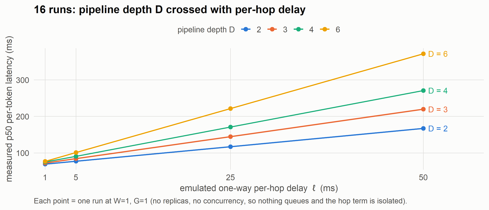
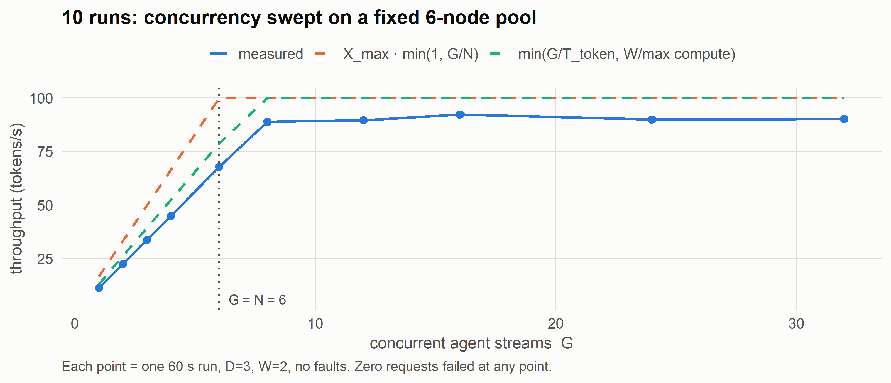
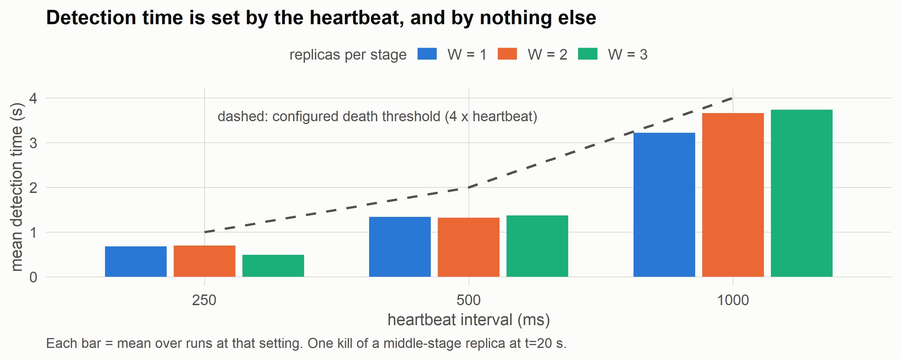
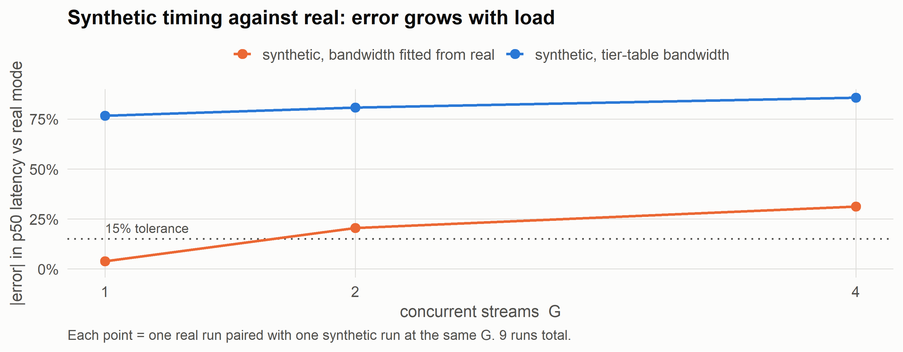

| pipeline depth D | measured slope (ms latency per ms of hop delay) | predicted slope (= D) | error | R² |
|---|---|---|---|---|
| 2 | 2.0013 | 2 | +0.07% | 1.000000 |
| 3 | 3.0039 | 3 | +0.13% | 1.000000 |
| 4 | 3.9930 | 4 | -0.18% | 0.999991 |
| 6 | 6.0113 | 6 | +0.19% | 0.999998 |
Measuring a pipelined, distributed inference network under network faults
2026-10-29
A pooled swarm of volunteer machines can store a model no single machine could hold. Aggregate memory is the one resource such a pool has in abundance.
The catch is that it can only ever be a throughput engine, never a low-latency one:
If that trade is real and quantifiable, a swarm is useful for agent workloads and batch work. If the overheads swamp it, the idea does not survive contact with a real network.
A companion analysis derives a cost model for such a swarm from first principles. It had never been tested against a running system.
Three things were open:
This work exists to gather data, not to demonstrate features.
| Per-token latency | \(T_{token} \approx \dfrac{P_a b + sq}{B} + D(\ell + a/\beta)\) |
| Peak throughput | \(X_{max} \approx \dfrac{\sum_i B_i}{P_a b + s q}\) |
| Utilisation ramp | \(X(G) \approx X_{max}\cdot\min(1,\, G/N)\) |
| Straggler gate | \(X_{pipe} = 1/\max_k t_k\) |
The decisive detail: the latency term uses one device’s bandwidth \(B\), not the sum. Adding devices cannot shrink it. Throughput scales linearly; latency does not scale at all.
Docker containers stand in for volunteer devices on one machine.
Two engines, sharing all decision code
| containers | virtual | |
|---|---|---|
| clock | real | simulated |
| network | real TCP + tc netem |
analytic |
| scale | ~60 nodes | 1000+ |
| speed | wall-clock | ~100k events/s |
Two compute modes
| real | synthetic | |
|---|---|---|
| worker | Qwen2.5-0.5B layers on CPU | sleeps the predicted time |
| payload | real tensors | same-size bytes |
The engines differ only in how time passes and how a message crosses a link. That is what makes comparing them meaningful.
Every point in every chart that follows is one complete run: a stack of containers started from a scenario file, loaded for 45–180 seconds, then torn down and collected.
| term | meaning | units |
|---|---|---|
| G | concurrent agent streams held in flight | count |
| D | pipeline stages (model layers cut into D blocks) | count |
| W | replicas per stage | count |
| p50 latency | median time for one token, gateway→gateway | ms |
| throughput | tokens completed ÷ steady-state window | tokens/s |
| ℓ | emulated one-way per-hop link delay | ms |
Compare the model against p50, not the mean. A hop timeout during a fault puts multi-second outliers in the sample; the mean then reports the stalls rather than the latency being predicted.
Predictions carry no fitted correction
An earlier version fitted an overhead term and folded it into the predictions. Agreement looked excellent — a ratio of 1.017.
It was circular: the worker slept the overhead the fit then re-measured. Successive fits diverged 1.2 → 2.2 → 3.3 ms.
Removed. The measured/predicted gap is now reported, not subtracted out.
Nothing is discarded, only labelled
Warm-up and fault-affected rows carry in_steady_state and fault_window flags.
A reader can see exactly what a summary excluded, and choose differently.
12,479 automated checks verify the output’s schema, units, joins and completeness.

Lines are straight and fan out by depth. The slope of each line is the measurement.
| pipeline depth D | measured slope (ms latency per ms of hop delay) | predicted slope (= D) | error | R² |
|---|---|---|---|---|
| 2 | 2.0013 | 2 | +0.07% | 1.000000 |
| 3 | 3.0039 | 3 | +0.13% | 1.000000 |
| 4 | 3.9930 | 4 | -0.18% | 0.999991 |
| 6 | 6.0113 | 6 | +0.19% | 0.999998 |
This is the cost model’s \(D(\ell + a/\beta)\) term confirmed directly. The network cost of a token is the per-hop delay multiplied by the number of stages — no more, no less.
Why it matters: depth is nearly free on a fast LAN and dominant on slow links. Going from D=2 to D=6 costs 17 ms at ℓ=1 ms, and 213 ms at ℓ=50 ms. Deep pipelines over slow links are the combination to avoid.

Measured throughput runs at 0.67 of the published ramp throughout the linear region — remarkably steady, which says it is a systematic bias, not noise.
The ramp assumes a stream keeps a node busy continuously. But a stream sits idle while its activation is on the wire.
The achievable rate is the smaller of two classical bounds:
\[X \;=\; \min\!\Big(\underbrace{G / T_{token}}_{\text{delay bound}},\;\; \underbrace{W / \max_k \text{compute}_k}_{\text{capacity bound}}\Big)\]
| mean ratio | sd across 10 runs | |
|---|---|---|
| measured ÷ published ramp | 0.789 | 0.119 |
| measured ÷ closed-loop bound | 0.880 | 0.025 |
The knee lands where predicted: capacity × \(T_{token}\) = 7.8, and the transition is observed between G=6 and G=8.
Re-run at the research report’s own scale (N=1000, D=50, 1T-param MoE), where compute is 3 seconds and the network is 50 ms:
| scale | network share of T_token | ramp error | measured ÷ ramp |
|---|---|---|---|
| this host (D=3, ℓ=5 ms) | 21% | 32% optimistic | 0.789 |
| report scale (D=50, ℓ=1 ms) | 1.6% | 1–2% | 0.991 |
The ramp’s error tracks the fraction of per-token time spent on the network. At the scale the model was written for, it is an excellent predictor. On a fast LAN with a shallow pipeline, it is not.
This also reproduced the report’s independently-derived figures: \(X_{max}\) 333.3 vs ~333 tok/s, \(T_{token}\) 3.054 vs ~3.05 s, saturation at G ≈ N = 1000.

Detection scales with the heartbeat and is independent of replica count — the three bars at each interval are nearly equal.
| replicas W | detection (s) | recovery (s) | requests failed | requests OK |
|---|---|---|---|---|
| 1 | 1.34 | never | 1155 | 108 |
| 2 | 1.32 | 1.40 | 1 | 339 |
| 3 | 1.37 | 1.40 | 1 | 425 |
W=1 is a cliff, not a slope. With no surviving replica the stage is gone for the rest of the run: over a thousand requests fail and recovery never happens. A faster heartbeat does not help — it detects the loss sooner, and there is still nowhere to route.
Recovery is governed by the client’s hop timeout, not by detection. Holding the heartbeat fixed and sweeping the timeout from 250 ms to 5 s moved recovery from 1.5 s to 3.9 s while detection stayed flat at ~1.4–1.6 s.
Why it matters: tuning the wrong parameter does nothing. Detection ← heartbeat. Recovery ← client timeout. Failed requests ← replica count.
Same scenario, real Qwen2.5-0.5B layers on CPU vs synthetic workers.

Using the tier table’s nominal bandwidth, synthetic mode is 77–86% wrong. Tier bandwidths are ratios, not achievable speeds.
Good news
Fitting effective bandwidth from the real runs — measured 6.9 GB/s against a 45 GB/s nominal, 6.5× optimistic — brings single-stream agreement to 3.9%.
The memory-bound model of a decode step is sound.
Bad news
Error grows to 31% at G=4, because synthetic mode cannot reproduce CPU contention:
| G | real stage compute (ms) | synthetic (ms) |
|---|---|---|
| 1 | 57.7 | 70 |
| 2 | 68.8 | 70 |
| 4 | 94.7 | 70 |
It also has no prefill/decode asymmetry, so it over-predicts throughput by 1.6–2.2×.
Synthetic results are evidence about network and churn effects. They are not evidence about a real deployment’s absolute throughput.
The virtual engine is only as good as its agreement with real containers. Running identical scenarios on both:
| axis | median error | verdict |
|---|---|---|
| per-token p50 latency | 1.6% | agrees |
| throughput | 7.0% | over-predicts, knowably |
| stage compute | 0.0% | agrees |
| stage network time | 4.1% | agrees |
| aggregate queue wait (at saturation) | 5.1% | agrees |
Trustworthy for latency, compute, network and aggregate queueing. Not trustworthy for queue-wait distribution or tail latency: deterministic service concentrates all waiting in a third of hops where real jitter smears it.
Supported
Not supported
tc is not a home network. It models delay and loss well, not full link behaviour.Six defects were found and fixed during the work — a circular calibration, a transport artifact that would have doubled the delay sweep’s slope, and four others. Each would have produced confident-looking, wrong numbers.
| to establish | you would need |
|---|---|
| that these effects are real, not noise | the sweeps re-run across several seeds, with error bars |
| absolute throughput for a real deployment | real mode at scale, or a prefill-aware synthetic model |
| behaviour under sustained churn | the random churn model run for hours, not one scripted kill |
| tail latency at scale | containers at scale, or a jitter model in the virtual engine |
| that it survives real networks | multi-host deployment; tc cannot answer this |
The harness is built to answer all of these: the scenarios are data, the runs are repeatable, and the analysis re-derives from raw logs in seconds.
github.com/JohnBullDog/ swarm-poc-network-fault-harness
Every figure in this deck was computed from the published CSVs at render time. Nothing was typed in by hand.